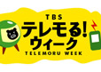
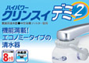

Websites

Skullsquadron
2010
YN Translation Service
2009
AK100 World Tour
2008Benefit Concert for...
2008
Tact Home Search
2008
Linkshare Channel
2008
Treasure Net
2008
ERC
2007
Kyodo Factory Inc
2007
Pinocchio
2007
Uticket
2007
tvmono.jp
2007
Seitaihonpo
2006Shinjuku Face
2006Live Master
2006
Null Top
2006
Groovy Pasta
2006
Craft Japan
2006
TBS
2006Amazon Civilization
2006Aru Ai no Uta
2006Doors
2005
Pearls
2005
Kowai Blog
2004Seacret Window
2004The Passion of...
2004
Steamboy
2004
Big Fish
2004Spider-Man 2
2004Infernal Affairs II
2004
Implant :aka They
2004
In America
2004Charlie's Angels: Full...
2003
God Diva :aka Immortel
2003
Enigma
2003
Intacto
2003
Identity
2003Infernal Affairs I
2003
ALEX :aka Irréversible
2003
White Oleander
2003
Moonlight Mile
2003K-19
2002Hotel
2003FOX Movies Japan
2003
Graphics & Others

Woven Light
2010
Bonsai Auction
2010
Tacky Smack
2010
Tacky Smack
2010
Tacky Smack
2010Tacky Smack
2010YN Translation Logo
2009
Youmaga
2008
Uticket Logo
2006
Live Master Logo
2006- 
Telemoru Week Logo
2005 
Departure
2001
Kikai Mart Logo
2000- 
Mitsubishi Rayon
1999 
Nagomi Tea
1999DuPont
1999Yukijirushi
1999
Yukijirushi
1999
Yukijirushi
1999
Yukijirushi
1999
Yukijirushi
1999
Sasa-zuke Sake
1998
Nagomi Tea
1998
Lion McCormick
1998
Isetan Tsushin
1997